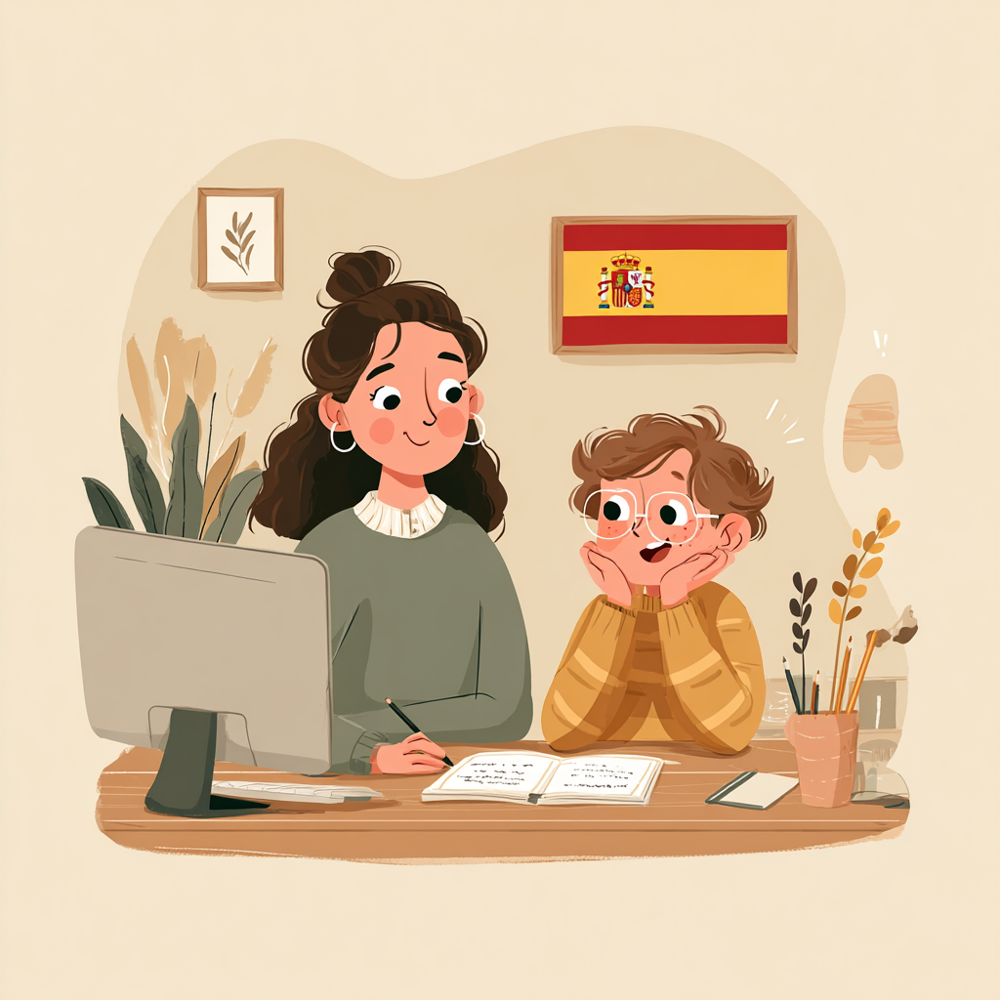

Soutien Scolaire en Langues à PézenasLanguage Academic Support in PézenasApoyo Escolar en Idiomas en PézenasSupporto Scolastico in Lingue a Pézenas
Du CP à la Terminale · Espagnol, Italien, Français · Préparation au BacFrom Year 1 to final year · Spanish, Italian, French · Bac preparationDe primaria a bachillerato · Español, Italiano, Francés · Preparación del BacDalla primaria alla maturità · Spagnolo, Italiano, Francese · Preparazione al Bac
Nous contacterContact usContáctenosContattaciUn accompagnement sur mesurePersonalised academic supportUn apoyo personalizadoUn accompagnamento personalizzato
Programme de soutien scolaire du CP à la terminale. Préparation au Bac de français, d'espagnol et d'italien. Accompagnement personnalisé – des cours adaptés au niveau et aux besoins de chaque élève.
Academic support from primary school to final year. French, Spanish and Italian Bac exam preparation.
Programa de apoyo escolar desde primaria hasta bachillerato. Preparación del Bac de francés, español e italiano. Acompañamiento personalizado – cursos adaptados al nivel y necesidades de cada alumno.
Programma di supporto scolastico dalla scuola primaria alla maturità. Preparazione al Bac di francese, spagnolo e italiano. Accompagnamento personalizzato – corsi adattati al livello e alle esigenze di ogni studente.
- Méthodes efficaces – des stratégies d'apprentissage modernes pour progresser rapidement.Effective methods – modern learning strategies for rapid progress.Métodos eficaces – estrategias de aprendizaje modernas para progresar rápidamente.Metodi efficaci – strategie di apprendimento moderne per progredire rapidamente.
- Professeurs qualifiés – des enseignants expérimentés et motivants.Qualified teachers – experienced and motivating instructors.Profesores cualificados – docentes experimentados y motivadores.Insegnanti qualificati – docenti esperti e motivanti.
- Résultats concrets – amélioration des notes, confiance en soi et réussite scolaire..Concrete results – improved grades, self-confidence and academic success.Resultados concretos – mejora de las notas, confianza en sí mismo y éxito escolar.Risultati concreti – miglioramento dei voti, fiducia in sé stessi e successo scolastico.
Les niveauxCourse LevelsLos nivelesI livelli
Notre programme de soutien scolaire couvre tous les niveaux du CP à la terminale. Nous accompagnons les élèves dans leur apprentissage des langues avec une approche personnalisée, adaptée aux besoins spécifiques de chaque élève. Préparation au Bac de français, d'espagnol et d'italien avec examen à la clé. Expertise dans l'accompagnement d'enfants et de jeunes présentant des troubles DYS et TDAH.
Our academic support programme covers all levels from primary to final year. We support students in their language learning with a personalised approach adapted to each student's specific needs. Preparation for French, Spanish and Italian Bac exams. Expertise in supporting children and young people with DYS disorders and ADHD.
Nuestro programa de apoyo escolar cubre todos los niveles desde primaria hasta bachillerato. Acompañamos a los alumnos en su aprendizaje de idiomas con un enfoque personalizado, adaptado a las necesidades específicas de cada alumno. Preparación del Bac de francés, español e italiano con examen incluido. Experiencia en el acompañamiento de niños y jóvenes con trastornos DIS y TDAH.
Il nostro programma di supporto scolastico copre tutti i livelli dalla scuola primaria alla maturità. Accompagniamo gli studenti nell'apprendimento delle lingue con un approccio personalizzato, adattato alle esigenze specifiche di ogni studente. Preparazione al Bac di francese, spagnolo e italiano con esame incluso. Esperienza nell'accompagnamento di bambini e giovani con disturbi DSA e ADHD.
Préparation au BaccalauréatBaccalaureate PreparationPreparación del BaccalauréatPreparazione al Baccalauréat
Nous accompagnons les lycéens dans la préparation aux épreuves du Baccalauréat en français, espagnol et italien. Méthodes d'expression écrite et orale, révision des points grammaticaux clés, entraînement aux exercices types de l'examen.
We support secondary school students preparing for their Baccalaureate in French, Spanish and Italian. Written and oral expression methods, key grammar revision, practice with typical exam exercises.
Acompañamos a los alumnos de bachillerato en la preparación del Baccalauréat en francés, español e italiano. Métodos de expresión escrita y oral, revisión gramatical, ejercicios tipo.
Accompagniamo gli studenti delle superiori nella preparazione al Baccalauréat in francese, spagnolo e italiano. Metodi di espressione scritta e orale, revisione grammaticale, esercizi tipici.
Formats disponiblesAvailable formatsFormatos disponiblesFormati disponibili
Questions fréquentesFrequently Asked QuestionsPreguntas frecuentesDomande frecuentes
Nous accompagnons les enfants dès le CP (6 ans) jusqu'à la Terminale (18 ans). Chaque programme est adapté à l'âge, au niveau scolaire et aux besoins de l'élève.
We support children from Year 1 (CP, age 6) through to final year (Terminale, age 18). Each programme is adapted to the child's age, school level and specific needs.
Acompañamos a los niños desde los 6 años (CP) hasta el bachillerato (18 años). Cada programa está adaptado a la edad y nivel del alumno.
Accompagniamo i bambini a partire dai 6 anni (CP) fino alla maturità (18 anni). Ogni programma è adattato all'età e al livello dello studente.
Oui, c'est une de nos spécialités. Camille a travaillé 7 ans comme AESH (Accompagnant des Élèves en Situation de Handicap), développant des méthodes adaptées aux élèves présentant des troubles DYS, TDAH ou autisme.
Yes, this is one of our specialities. Camille worked for 7 years as an AESH (Assistant for Students with Disabilities), developing methods adapted for students with dyslexia, ADHD or autism.
Sí, es una de nuestras especialidades. Camille trabajó 7 años como AESH, desarrollando métodos adaptados a alumnos con DIS, TDAH o autismo.
Sì, è una delle nostre specialità. Camille ha lavorato 7 anni come AESH, sviluppando metodi adattati agli studenti con DSA, ADHD o autismo.
Nous proposons les deux options : à notre école à Tourbes (proche de Pézenas), à domicile chez l'élève, ou en visioconférence. La formule est choisie selon les préférences de l'élève et de la famille.
We offer both options: at our school in Tourbes (near Pézenas), at the student's home, or via video call. The format is chosen to suit the student and family.
Ofrecemos las dos opciones: en nuestra escuela en Tourbes (cerca de Pézenas), en el domicilio del alumno o por videoconferencia.
Offriamo entrambe le opzioni: nella nostra scuola a Tourbes (vicino a Pézenas), a domicilio dello studente, o in videoconferenza.
Notre approche cible les lacunes spécifiques de l'élève avec des stratégies de mémorisation efficaces. La plupart de nos élèves constatent une amélioration visible en 4 à 6 semaines.
Our approach targets the student's specific gaps with effective memorisation strategies. Most of our students see a visible improvement within 4 to 6 weeks.
Nuestro enfoque identifica las lagunas específicas con estrategias de memorización eficaces. La mayoría ven mejoras en 4-6 semanas.
Il nostro approccio identifica le lacune specifiche con strategie di memorizzazione efficaci. La maggior parte vede miglioramenti in 4-6 settimane.
Votre professeureYour teacherSu profesoraLa vostra insegnante
Je suis Camille Farion, fondatrice de l'École Blabla Latina et professeure d'espagnol, d'italien et de français (FLE) depuis plus de dix ans. Titulaire d'un Master en langues étrangères, je mets ma passion pour l'enseignement au service des enfants, adolescents et adultes, en les accompagnant vers un progrès rapide et durable tout en leur ouvrant les portes d'une véritable richesse interculturelle.
I am Camille Farion, founder of the Blabla Latina School and a teacher of Spanish, Italian and French (FLE) for over ten years. Holding a Master's degree in foreign languages, I put my passion for teaching at the service of children, teenagers and adults, guiding them towards rapid and lasting progress while opening the doors to a truly rich intercultural experience.
Soy Camille Farion, fundadora de la Escuela Blabla Latina y profesora de español, italiano y francés (FLE) desde hace más de diez años. Titular de un Máster en lenguas extranjeras, pongo mi pasión por la enseñanza al servicio de niños, adolescentes y adultos, acompañándolos hacia un progreso rápido y duradero, abriéndoles las puertas de una verdadera riqueza intercultural.
Sono Camille Farion, fondatrice della Scuola Blabla Latina e insegnante di spagnolo, italiano e francese (FLE) da più di dieci anni. Titolare di un Master in lingue straniere, metto la mia passione per l'insegnamento al servizio di bambini, adolescenti e adulti, accompagnandoli verso un progresso rapido e duraturo aprendo loro le porte di una vera ricchezza interculturale.
Mon parcours m'a amenée à vivre plus de cinq ans dans différents pays d'Europe et d'Amérique latine, en partageant le quotidien des habitants et en apprenant directement auprès des locuteurs natifs, ce qui m'a permis de m'immerger pleinement dans leurs langues et cultures.
My journey has led me to live for more than five years in different countries in Europe and Latin America, sharing the daily lives of the inhabitants and learning directly from native speakers, which has allowed me to fully immerse myself in their languages and cultures.
Mi trayectoria me ha llevado a vivir más de cinco años en diferentes países de Europa y América Latina, compartiendo el día a día de los habitantes y aprendiendo directamente de los hablantes nativos, lo que me ha permitido sumergirme plenamente en sus lenguas y culturas.
Il mio percorso mi ha portata a vivere per più di cinque anni in diversi paesi d'Europa e dell'America Latina, condividendo la vita quotidiana degli abitanti e imparando direttamente dai madrelingua, il che mi ha permesso di immergermi pienamente nelle loro lingue e culture.
J'ai exercé sept ans comme AESH, période pendant laquelle j'ai pu perfectionner un enseignement auprès d'enfants présentant DYS, TDAH ou autisme, avec des méthodes applicables à tous les âges.
I worked for seven years as an AESH (Assistant for Students with Disabilities), during which time I was able to perfect teaching methods for children with dyslexia, ADHD or autism, using methods applicable to all ages.
Trabajé siete años como AESH (Asistente para Estudiantes con Discapacidad), período durante el cual pude perfeccionar la enseñanza con niños que presentan dislexia, TDAH o autismo, con métodos aplicables a todas las edades.
Ho lavorato sette anni come AESH (Assistente per Studenti con Disabilità), periodo durante il quale ho potuto perfezionare l'insegnamento con bambini con DSA, ADHD o autismo, con metodi applicabili a tutte le età.
Avis des élèves de notre école de languesReviews from our language school studentsOpiniones de los alumnos de nuestra escuela de idiomasRecensioni degli studenti della nostra scuola di lingue
Contactez notre école de languesContact our language schoolContacte con nuestra escuela de idiomasContattate la nostra scuola di lingue
Laissez un message. Nous revenons vers vous.Leave us a message. We'll get back to you.Déjenos un mensaje. Le responderemos.Lasciateci un messaggio. Vi risponderemo.
AdresseAddressDirecciónIndirizzo
1 Rue des Fontaynelles
34120 Tourbes, France